01先建立世界，再交给用户。
三个不同的起点：标题入口、叙事开场、首个操作场景。比较的是如何把注意力收拢，不是同一秒发生了什么。
Wayfinder W01 · 标题入口
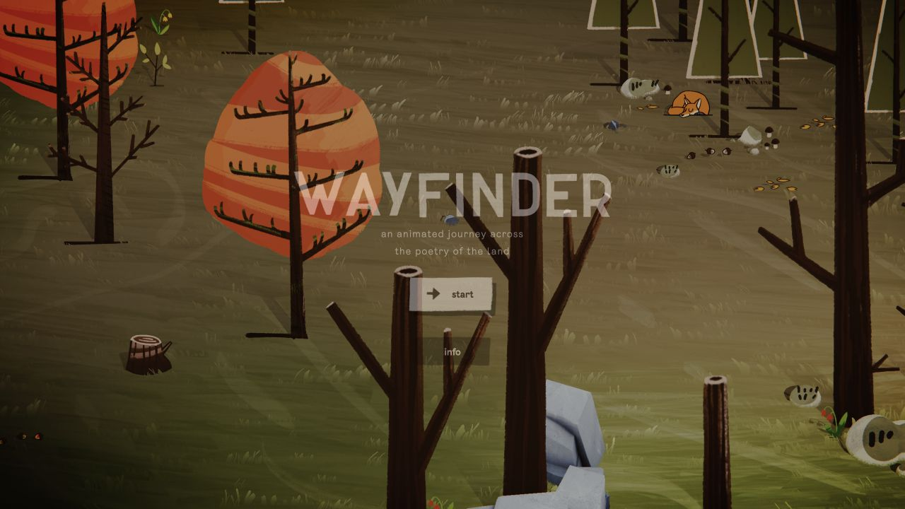
标题落在已经存在的森林里。近处树干形成遮挡，远处地表与小动物延伸空间。中央入口由背景压暗获得可读性。
Kaizen K02 · 开场短句
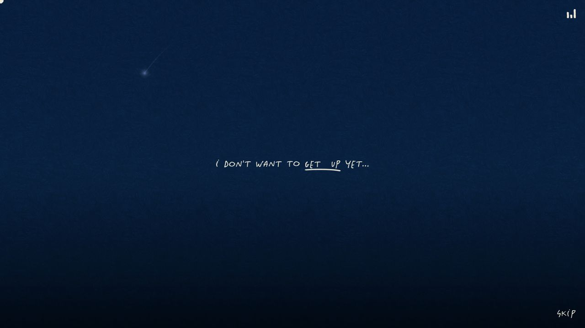
先留下一个安静的声音。深蓝笔触上只有居中短句、手画下划线和少量光点。跳过入口退到右下角。
Nomadic Tribe N02 · 首个场景
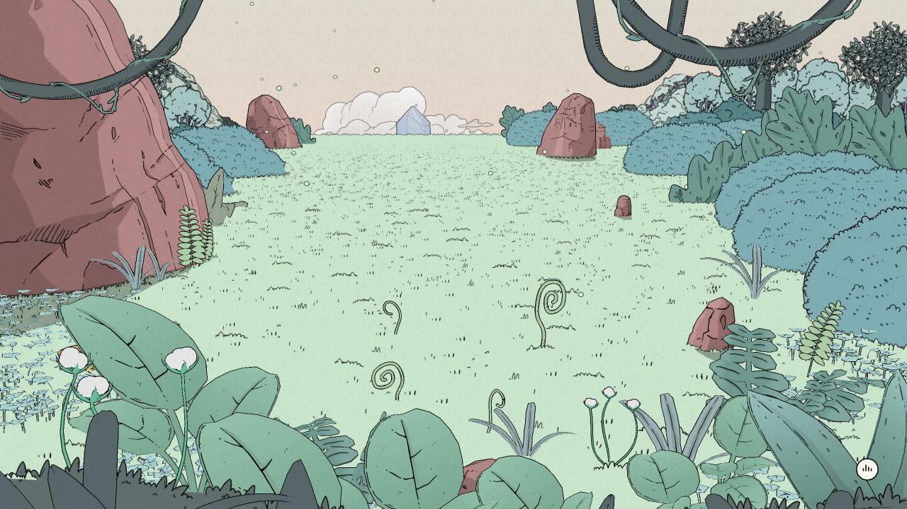
让操作对象先被看见。裁切的大叶与藤蔓围住草地，卷曲嫩芽留在可操作的空地里。这张静帧没有捕获明确的文字操作提示。
设计推断主图的第一件事是建立观看关系；文字、角色与操作提示不必同时争取第一眼。
02用户做的事，就是画面发生的事。
实际过程分别是沿词链移动、长按完成跳跃、按住并调整飞行方向。截图证明对应状态，连续动作由操作日志补充。
Wayfinder W05 · 第一条词链
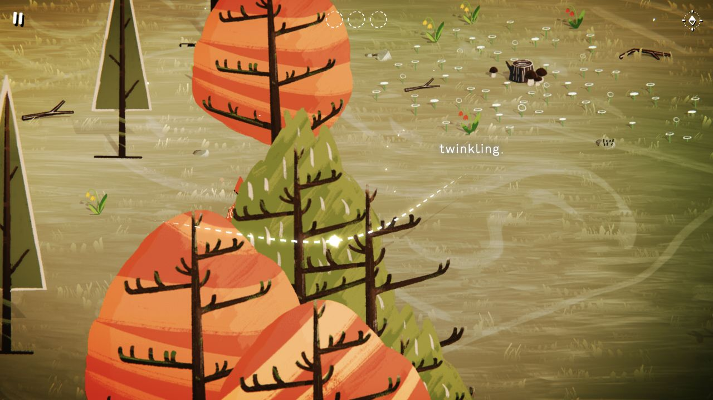
走过世界，词才出现。白色虚线穿过树木，单词在地景中浮现；前景仍会遮住角色。文字参与空间，而不只是固定在屏幕边缘。
Kaizen K13 · 第三幕建立镜头
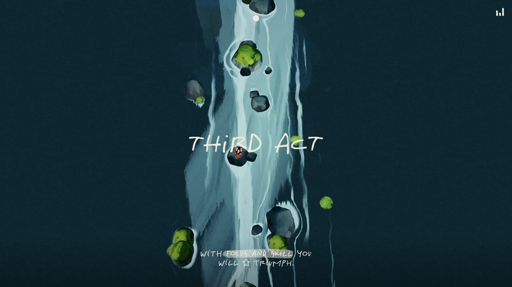
俯视先交代路线与落点。暗色两岸围住亮河，蛙停在小石上。这是第三幕建立状态，仍有章节字；并非长按高潮帧。
Nomadic Tribe N11 · 按住飞行后
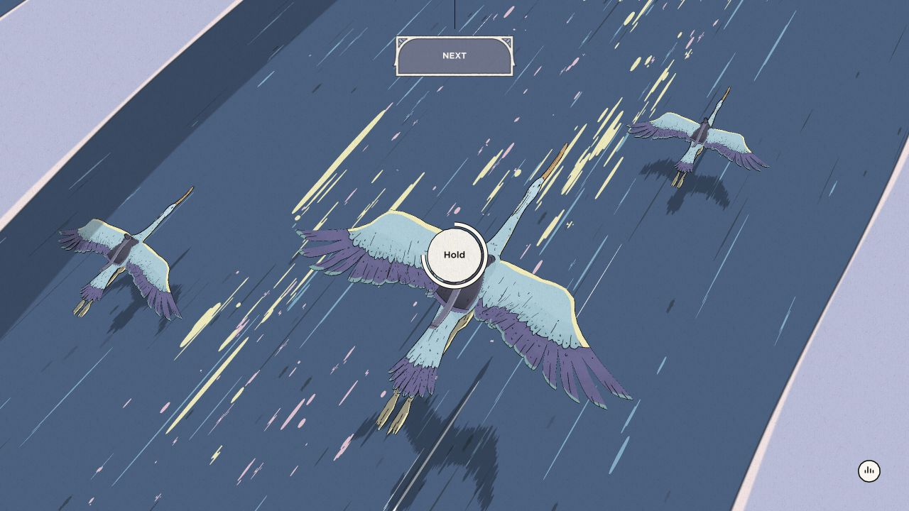
斜向前进，主体仍靠近中央。大鸟、较小同伴、影子与彩色短线共同给出位移参照。Hold 靠近操作位置，Next 独立留在顶部。
设计推断“左下到右上、女孩保持中央”需要地面、阴影与沿途参照物共同移动；单独摇晃一张角色图片，难以建立行走空间。
03反馈先发生在世界里。
完成可以被收拢成诗卡，也可以改变镜头尺度，或让植物在操作位置长成。它们并不都用同一种弹窗宣布成功。
Wayfinder W23 · 六首完成
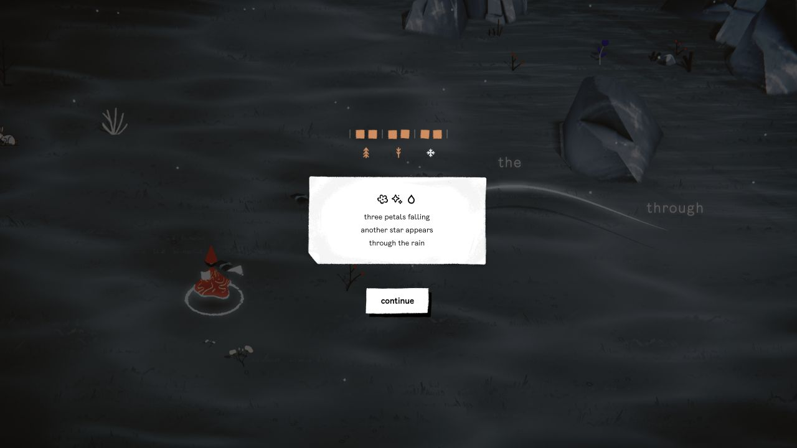
分散的词句，收成一张纸。环境压暗，三行诗成为阅读焦点，六个进度格全部填充。此时还要继续并返树，不能把采集完成等同于片尾。
Kaizen K14 · 长按后的主题帧
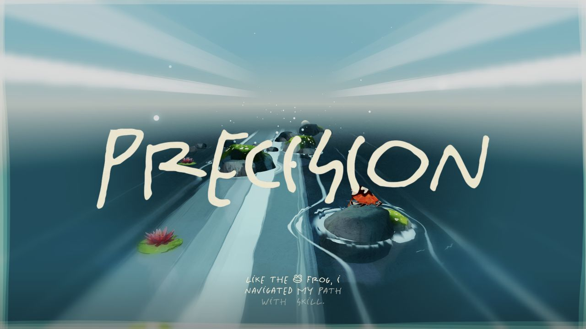
同一条河，被重新观看。镜头转为低机位纵深，Precision 取得一次很大的尺度，底部字幕仍然较小。下一张休息帧又回到俯视。
Nomadic Tribe N14 · 新岛开花
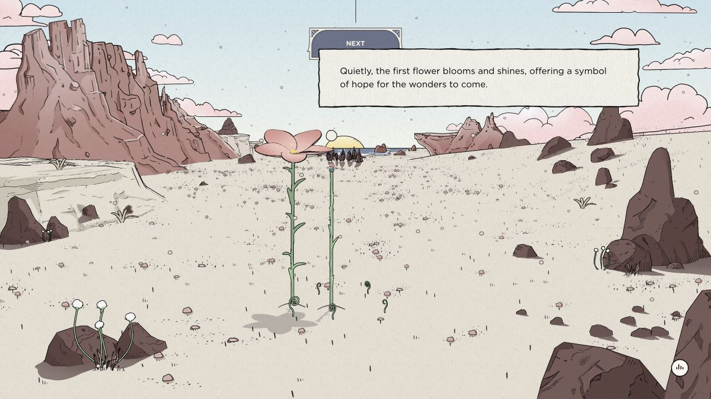
动作的结果留在原来的土地上。上拉后，花茎与花进入中景并投下影子，顶部 Next 已出现。小人群留在远处，字幕纸片在上方偏右，避开主要操作区。
设计推断安静状态与动作高潮需要尺度差异。先让脚步、路面和镜头产生可见后果，再决定是否需要文字确认。
04结束之后，世界仍有回声。
本轮实际到达的三站片尾。完成状态由这些画面与相邻操作记录共同确认，不由截图文件名推断。
Wayfinder W26 · 结束入口
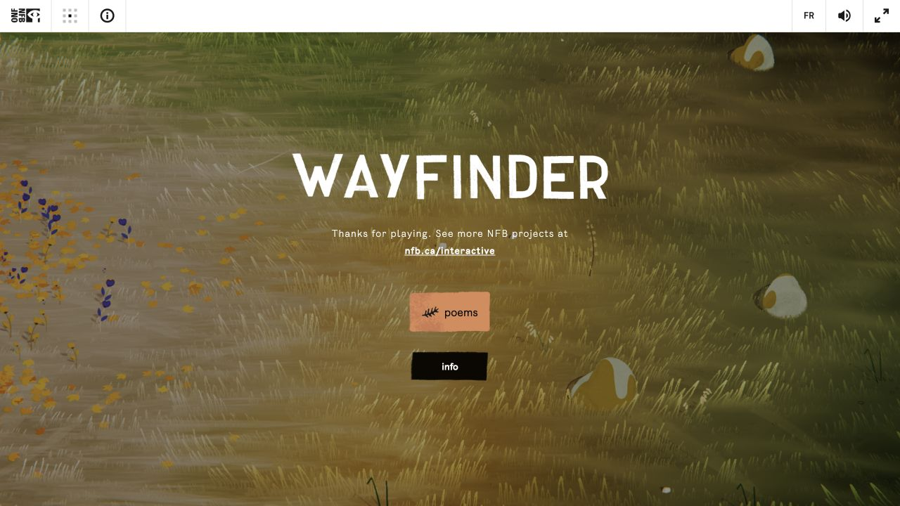
回到土地，留下诗集入口。最终返树演出后出现 Thanks for playing。背景恢复暖色草地，poems 允许回看一路收集的内容。
Kaizen K20 · 四幕回顾入口
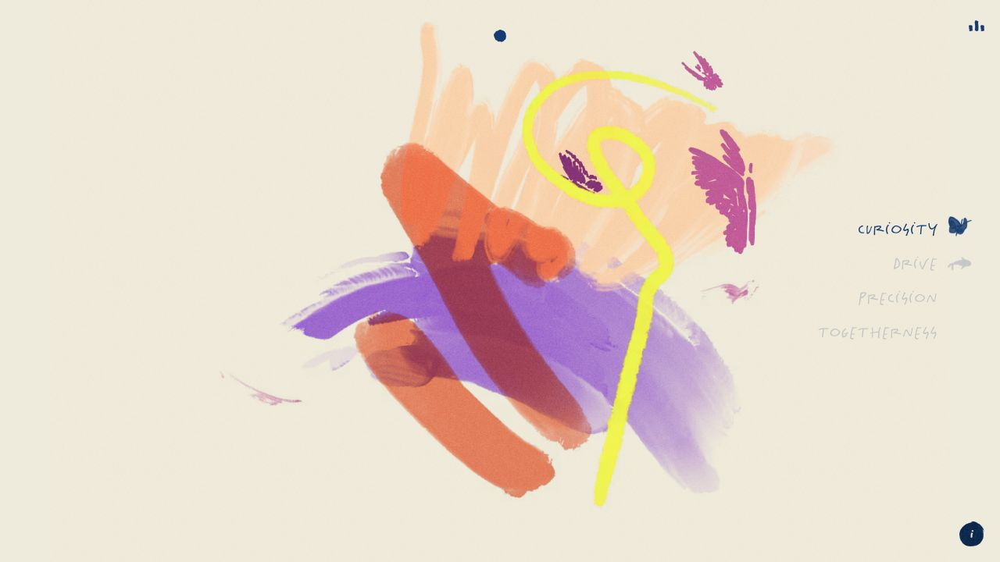
把场景收拢成笔触。蝴蝶、颜色与运动线凝成中央形体，四幕入口退到右侧。片尾延续了前文的绘画材料。
Nomadic Tribe N15 · 祝福片尾
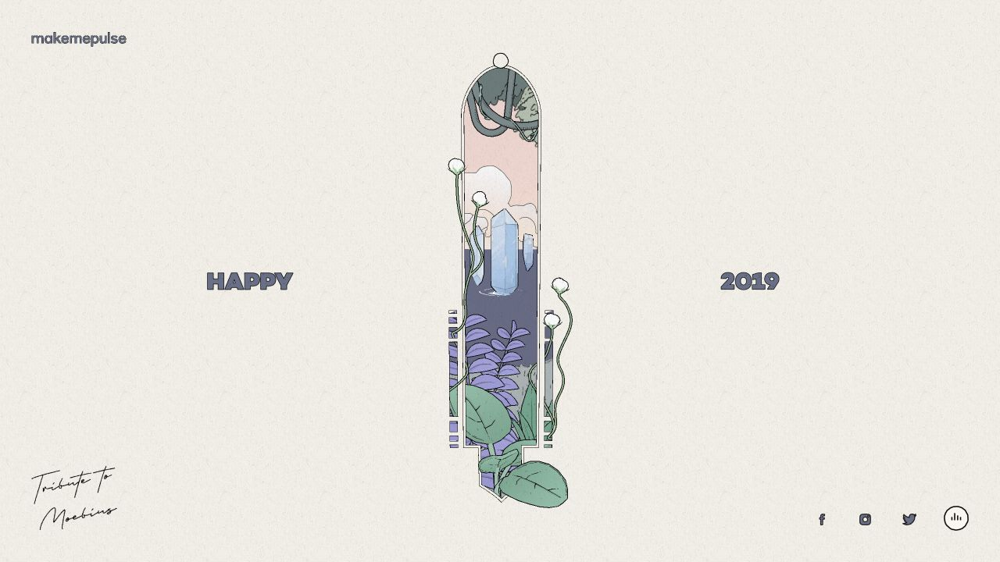
一段旅程变成一枚画面。纸底上保留细线、植物与晶体，收在中央窄形窗口内。左右祝福与左下手写署意保持较大的留白。
05Wayfinder：换了季节，不必重学动作。
森林、草地与雪地都保留词链、红衣角色和同一套采集反馈。章节变化主要由地表、植物、色温与空间密度承担。
森林 W05
遮挡与密度。橙绿树冠挤入前景，词链在树间穿行。角色有时被遮住，世界并未为了始终露出人物而变成空地。
草地 W14
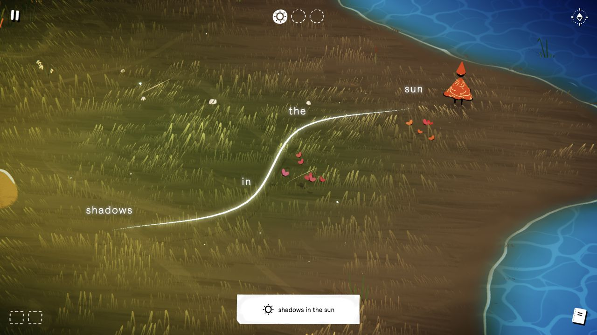
展开与岸线。草痕铺开大面积地表，蓝水围出边界。完成词链变为亮线，底部小纸片短暂确认整句。
雪地 W19
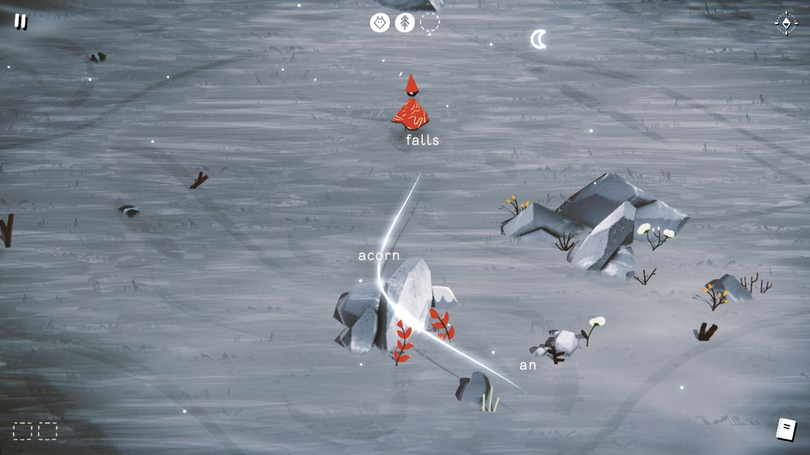
降温与聚焦。蓝灰横痕、岩石和稀疏植物降低色彩密度；红衣轮廓继续保持识别，词链机制无需再次教学。
06Wayfinder 片尾末段：12 张静帧。
树周光带消退，完成短句出现，再交还标题与诗集入口。后半组保留了片尾文字稳定、背景继续变化的状态。
采样采用计划每 2 秒一次的间隔，截图调用本身会增加实际间隔。第 00 张已经处于演出后段；这里没有精确的结局触发时间，序号不代表触发后的秒数。这组材料既不是完整结局演出的起始记录，也不是连续录屏或逐帧录像。
横向滚动查看 00—11；也可点击任一图片打开原始静帧。
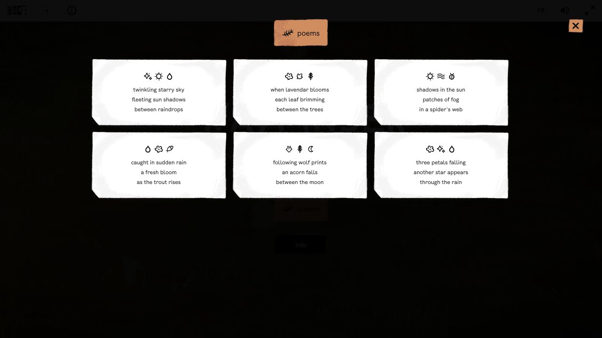
W27 · 片尾打开 poems，六张完整诗卡同时可见。
完成不只靠一个“结束”页面证明。
W23 的六格进度、W26 的结束入口与 W27 的六首诗集相互印证；相邻日志另记录三种环境与最终返树的实际操作。
六首诗采集完成后，仍需返中央树触发结尾。这使“收集完成”与“旅程结束”拥有不同的画面与节奏。
现场记录：events.json
07什么看到了，什么核对了，什么是建议。
本页是研究证据入口，不是报告模板，也不代表此后主图已经完成设计评审。第三方画面仅用于比较研究。
现场事实
截图证明构图、可见文字与当下姿态；动作日志补充实际点击、拖动与按住。三站交替操作，日志的时间差不能直接当成章节时长。
查看动作与事件记录 ↗来源规则
字体、字幕设定和交互门槛来自发布包或公开源码核对。程序设定不等同于现场精确测量；公开仓库也未逐文件证明与现站完全一致。
查看时间与规则核对 ↗设计推断
本页带“设计推断”的句子，是对此后主图的转化建议。它们需要在新画面与实际交互中验证，不是原站已经给出的项目答案。
查看详细现场观察 ↗
Wayfinder森林两诗 → 返树 → 草地两诗 → 返树 → 雪地两诗 → 最终返树 → 片尾与六首诗集。
完成交叉证据 ↗
Kaizen花园／好奇 → 水面／驱动 → 河道／精准 → 鸟群／同行 → 结语 → 四幕回顾入口。
片尾证据 ↗
Nomadic Tribe嫩芽生长 → 湖岸热点 → 鸟背旅途 → 新岛种花 → 祝福片尾。
片尾证据 ↗
- 主线完成不代表全部可选反馈已验证。Nomadic Tribe 的 N09 中仍有一枚小晶体呈灰色；三处均尝试过操作，不足以证明所有变色反馈完成。
- Kaizen 第四幕主题大字没有被捕获；K18 实际是粉色云层空镜与片尾入口，不能依据文件名补写不存在的画面。
- Wayfinder 自动化操作中曾出现释放后继续行走。是否由工具未送达 mouseup 引起尚未证实；这是操作测量的限制，不能据此声称原作采用自动行走设计。
- 静帧没有覆盖全部动作中间过程，也不足以测量完整的声画同步、逐词出现速度或每个转场曲线。三站主线完成，不等于已经获得三站逐帧录像。